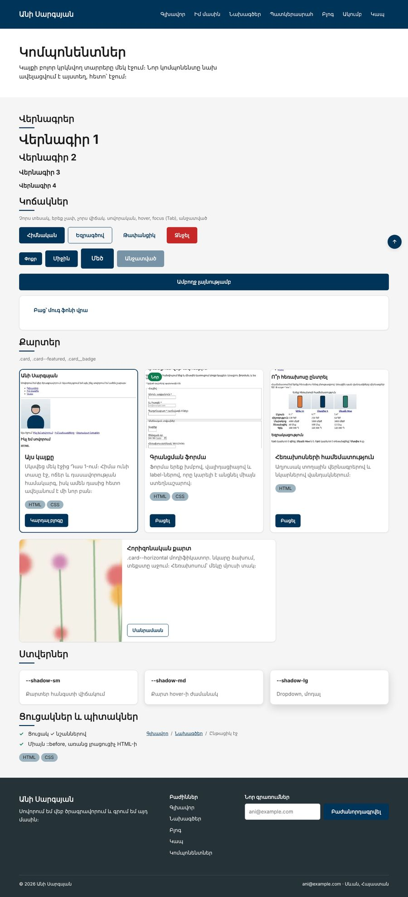
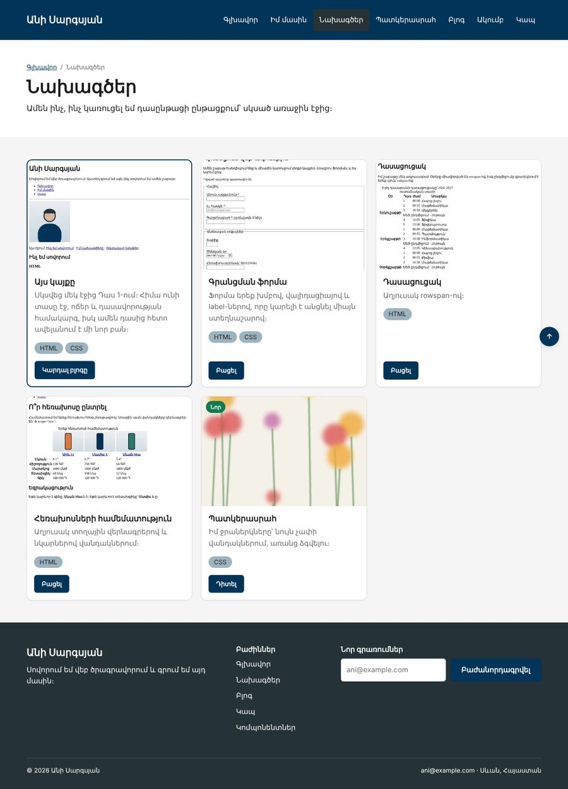

Տնային աշխատանք · HTML Դաս 17 · մինի-նախագիծ
Կայքի կրկնվող տարրերը դառնում են կոմպոնենտներ՝ կոճակների համակարգ, BEM քարտ մոդիֆիկատորներով, ստվերների սանդղակ և ::before/::after։
Օգտագործիր միայն Դաս 01–17-ը։ Փշրանքներում ընթացիկ էջը առայժմ պարզ li է․ aria-current-ը Դաս 18-ում է։ Գույները դեռ մեկ շերտով են, երկու շերտի տոկենները Դաս 19-ում են։
Կայքը ստանում է կոմպոնենտների գրադարան՝ առանձին էջ, որտեղ հավաքված են բոլոր կոճակները, քարտերը, ստվերները և ցուցակները։ Ամբողջ կայքում կոճակները օգտագործում են մեկ համակարգ։


Սկսիր Դաս 16-ի քո կայքից։ Եթե այն չունես, վերցրու Դաս 16-ի օրինակը։
.btn {
display: inline-flex;
align-items: center;
justify-content: center;
gap: 8px;
padding: 12px 24px;
min-height: 44px;
border: 1px solid transparent; /* որ hover-ին չցատկի */
border-radius: 6px;
font-weight: 700;
cursor: pointer;
transition: background-color .15s, color .15s, border-color .15s;
}
.btn--primary { background: var(--secondary); color: var(--on-dark); }
.btn--primary:hover { background: #00253f; }
.btn--outline { background: transparent; color: var(--secondary); border-color: var(--secondary); }
.btn--sm { padding: 8px 16px; min-height: 36px; font-size: 0.875rem; }
.btn:focus-visible { outline: 2px solid var(--secondary); outline-offset: 2px; }
.btn:disabled { opacity: .5; cursor: not-allowed; pointer-events: none; }Անցիր ամբողջ կայքով և ամեն class="btn"-ին ավելացրու տեսակը։ Ջնջիր :focus-visible-ը և անցիր էջը Tab-ով․ նկարագրիր, թե ինչ զգացիր։ Վերադարձրու։
Կայքի արմատում ստեղծիր components.html՝ նույն header-ով և footer-ով։ Ցուցադրիր բոլոր կոճակները՝ չորս տեսակ, երեք չափ, անջատված վիճակ, և բաց կոճակը մուգ ֆոնի վրա։ Ավելացրու հղում footer-ում։
Երեք տոկեն :root-ում և երեք դաս՝ .shadow-sm, .shadow-md, .shadow-lg։ Ցուցադրիր դրանք երեք բլոկի վրա։ Քարտը հանգստի վիճակում՝ sm, hover-ի ժամանակ՝ md։ Փորձիր 0 10px 3px․ երբ լղոզումը փոքր է տեղաշարժից, ստվերը նման է կեղտի։
.card--featured՝ ընդգծված եզրագիծ։ Տուր այն «Այս կայքը» քարտին Նախագծերի էջում.card--horizontal՝ flex-direction: row, նկարը՝ 40%։ Տեքստը և կոճակը փաթաթիր .card__main-ի մեջ։ Հեռախոսում՝ նորից ուղղահայաց.section-title { position: relative; padding-bottom: 12px; }
.section-title::after {
content: ""; /* առանց սրա ոչինչ չի երևա */
position: absolute;
left: 0;
bottom: 0;
width: 48px;
height: 3px;
background: var(--secondary);
}
.check-list li { position: relative; padding-left: 28px; }
.check-list li::before { content: "✓"; position: absolute; left: 0; color: #0f7b4f; }
.crumbs li + li::before { content: "/"; margin: 0 8px; }Բոլոր բաժինների h2-երին ավելացրու class="section-title"։ Ներքին էջերի վերևում ավելացրու փշրանքներ՝ nav > ol.crumbs։ Բաժանարար «/»-ը HTML-ում չկա, այն ::before-ն է։
--featured և --horizontal| Սխալ | Ինչպես ուղղել |
|---|---|
::after-ը չի երևում | Չկա content: "" |
| Գիծը հայտնվեց էջի ներքևում | Վերնագիրը չունի position: relative |
| Կոճակը hover-ին «ցատկում» է 2px-ով | Բազային կոճակին՝ border: 1px solid transparent |
Սրանք Դաս 17-ի տնային աշխատանքի կետերն են։ «մինի-նախագծում» նշվածները արդեն կատարել ես վերևի քայլերում, մնացածը կատարիր առանձին ֆայլերում կամ նույն թղթապանակում։
components.html՝ բոլոր կոճակների տեսակներով, չափերով և վիճակներով։ մինի-նախագծում:focus-visible-ը և փորձիր նավարկել Tab-ով։ Նկարագրիր զգացողությունը։ մինի-նախագծում.card--horizontal մոդիֆիկատոր՝ նկարը ձախում, տեքստը աջում։ մինի-նախագծում0 10px 3px։ մինի-նախագծում::before-ով, առանց լրացուցիչ HTML-ի։ մինի-նախագծում::after գիծ բոլոր բաժինների վերնագրերին։ մինի-նախագծումԵրբ բաժին 03-ի բոլոր կետերը նշված են, բացիր օրինակը և քո էջը կողք կողքի։ Բացիր երկուսի կոդն էլ խմբագրիչում։ Գտիր մեկ բան, որ դու արել ես այլ կերպ, և մտածիր՝ որն է ավելի հասկանալի և ինչու։ Քո լուծումը կարող է տարբերվել և լինել ճիշտ։